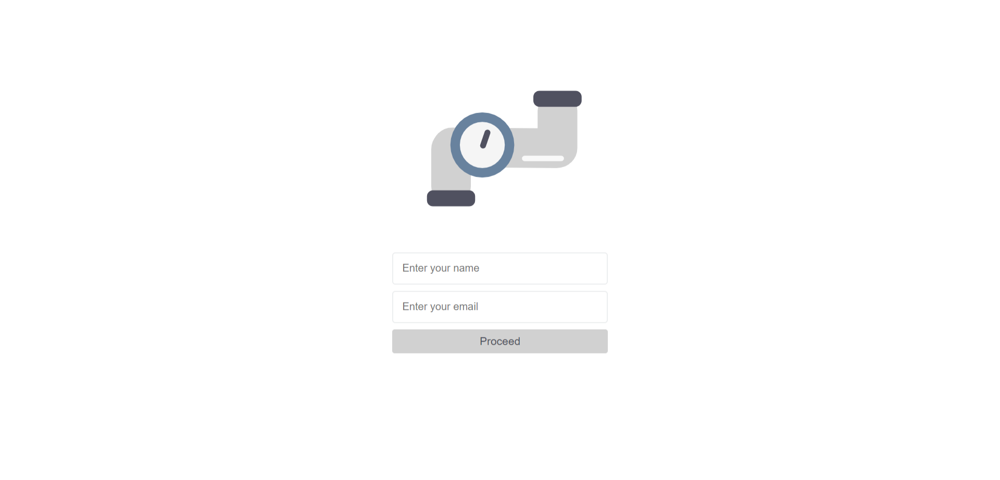

Introduction
This version of the application is titled "Vanilla", meaning it's a dumbed-down version of original application. Many of the features in the default web application will be omitted, including smart personal assistance, custom authentication, miscellaneous application integration, and admin desktop tool support.
The purpose of this deviation from the main branch of the application was to provide easier integration and maintenance of the application by the staffs of Office of Election, in the case that they choose to utilize some or all of the components in the application.
With that in mind, the Vanilla version of PIPE was written without the help of any foreign frameworks or libraries that are NOT currently used by the department (one inevitable exception is moment.js) to reduce the additional learning curve associated with those tools. In addition, the code was documented extensively unlike that of the original version, to assist with comprehension. This boiled down to the exclusion of Bootstrap, Angular 2, and Express, and the jQuery library that would normally be imported in a traditional JavaScript based stack.
Note that the Vanilla version of PIPE no longer uses Node.js as the backend, but rather IIS for the server and ASP.NET Core for providing API endpoints (the technology stack currently deployed by the Office of Election).
Walkthrough
This is the landing page that you see when you first open the application. Type in your name and email.
Proceed by clicking the button. You do not have to put in a password.
This is where you will schedule your training appointment. By default the current month will be loaded for the calendar.
At the top of the calendar you can find the controls component. You can manipulate the calendar by clicking on the 'prev' or 'next' button.
One noticeable flaw in the original version of the application was its lack of a self-explanatory user interface. Press the 'Toggle helper' button at the top menu to toggle the visibility of helper boxes that describe each feature of the application.
Each training button represents a training session that you can register for. Click on it to load its information to the side menu on the left.
Click on the 'Apply' button to complete your registration.
Getting Started
Note: Easiest way to create a development environment for this application is to open the project in Microsoft Visual Studios and simply click on the 'IIS Express' button. Otherwise refer to the steps below:
-
Install IIS. Open an elevated Powershell or command line window and run the following command:
Start /w pkgmgr /iu:IIS-WebServerRole;IIS-WebServer;IIS-CommonHttpFeatures;IIS-StaticContent;IIS-DefaultDocument;IIS-DirectoryBrowsing;IIS-HttpErrors;IIS-HealthAndDiagnostics;IIS-HttpLogging;IIS-LoggingLibraries;IIS-RequestMonitor;IIS-Security;IIS-RequestFiltering;IIS-HttpCompressionStatic;IIS-WebServerManagementTools;IIS-ManagementConsole;WAS-WindowsActivationService;WAS-ProcessModel;WAS-NetFxEnvironment;WAS-ConfigurationAPI -
Clone repository.
git clone https://github.com/architechs-hacc/pipe.git -
Copy static web files to IIS directory.
robocopy C:\..\path\to\pipe\vanilla C:\inetpub\wwwroot /s /e -
Open application at:
localhost
Directory Structure
vanilla/
bin/ # Compiled .dll files
obj/ # Temporary folder to store object files before linking.
Properties/ # Project specific settings.
Controllers/ # Definition of API behaviors.
Models/ # Interfaces and classes.
wwwroot/ # Static files (JavaScript, HTML, CSS).
User Interface
All styles of web elements will be defined in style.css. The top menu bar is fixed, as well as the side bar. The main, white area with the calendar is a flex box. The controller with the month indicator resides in the first column and the actual calendar in the second column.
Scheduling Flow
Here is a diagram that shows how main.js works. This is to help with understanding the application logic for development purposes.
Data Storage
At the moment the application is not using a MySQL database to persist training and user data. For simple demonstration purposes all changes to the application are stored in a temporary dictionary that lasts for the duration of the server's up-time. To see implementations of the backend data storage using more stable platforms like MySQL and MongoDB, please check out the original version of the application.
Prototypes of the database methods are defined as follows:
public interface IDatabase<T>
{
IEnumerable<T> Get(); // Retrieve all elements in the database.
bool TryGet(int id, out T element); // Retrieve a single element by ID.
T Add(T element); // Add an element to the database.
bool Delete(int id); // Delete an element from the database.
bool Update(T element); // Replace an entry with an element.
}
Configuration
Two changes were made to Startup.cs file that may be worthwhile to be aware of:
1. Calling the UseStaticFiles() method from the IApplicationBuilder instance. This enables
the application to load static assets like JavaScript. It is traditional to comply
with the built in MVC model in a NET Core environment, but the key restriction in our case
was to make development look as simple as possible, even for beginners. To avoid additional complexities
associated with data binding we load our application from static HTML files. Remember that we still
need to use MVC regardless of this.
2. Ironically, using dependency injection actually makes coding simpler than following an alternative
approach that avoids it. What we must do then is register each of our services (the databases) as a singleton
so that classes that need it can share the same member variables and functions of the service.